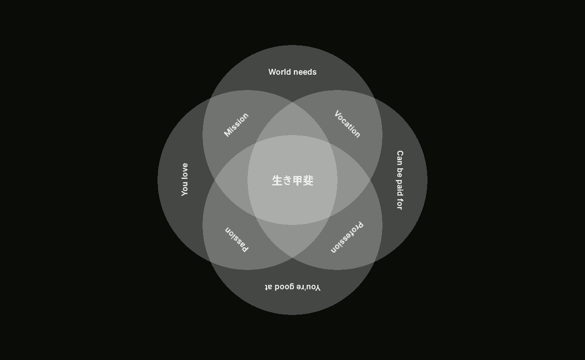

侘寂
Nothing lasts, nothing is finished, and nothing is perfect.
— Richard Powell, Wabi Sabi Simple
Wabi-sabi focuses on the acceptance of transcience and imperfection in our lives and teaches us to be content with how things are.
生き甲斐
Ikigai is the “reason for being.” I have yet to discover mine.
Life, well lived, is long enough.
— Lucius Annaeus Seneca